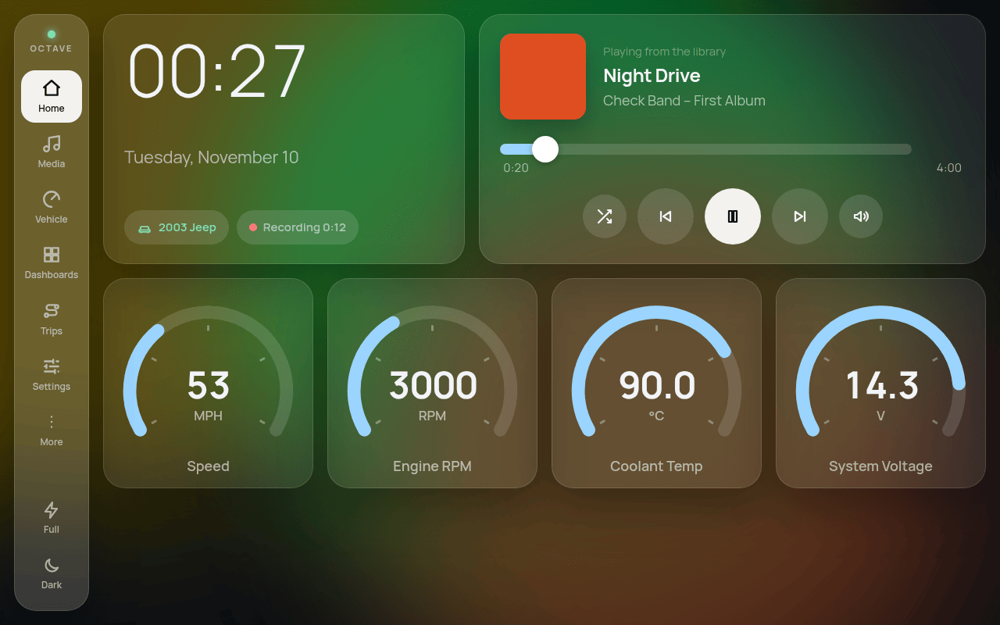

The other screens that exist for OCTAVE: five complete examples and three starter templates, with where each one runs and how to try it.
What a Frontend Is
A frontend is a screen for OCTAVE: a separate program or web page that shows the car and the music and sends your taps back, over the same service API the built-in screen's data comes from. It can be written in any language, and it can take the built-in screen's place on the device. Writing a Frontend explains how to make one; this page shows the ones that exist.
Try One
In a browser, with nothing to install
The frontend playground runs a web frontend beside the real OCTAVE core and a simulated car. Pick one from its list, or type the address of a frontend hosted anywhere. playground.html?frontend=<name or URL> opens one directly; a frontend from another site runs only after you say yes.
The browser demo lists them in Settings > Device > Developer > Frontends. Tap a picture and that frontend covers the built-in screen at once, on the same car. Its ← OCTAVE button, or mute pressed five times within four seconds, brings the built-in screen back. The Console is shown greyed out there: it is a terminal program.
On a device or a desktop
Get the frontend's folder and build it if it needs building. Each one's README has the command and names the folder to install.
In OCTAVE, open Settings > Device > Developer > Frontends and press Install from folder (or Install from zip).
For a program, press Try on its tile: OCTAVE restarts on it now and returns to the built-in screen after two minutes. Tap the tile itself to use a frontend from the next start.
To get the built-in screen back at any time, press mute five times within four seconds.
No car is needed: octave --headless --sim runs OCTAVE with a simulated car and no window, and every frontend here connects to it. Add --web-root <folder> for a web one and open http://127.0.0.1:9876/. Installing Your Frontend has the rest.
Example Frontends
Five complete frontends, each in a different language and style, written to show that a whole screen can be built on the API. None of them ships with OCTAVE. They are in examples/frontends/ under the MIT license; PARITY.md there lists, feature by feature, what each one reaches, and check_all.sh runs each one's own checks against a simulated car.

Glass
TypeScript + Svelte 5 · runs in a browser
A frosted-glass tablet screen, light and dark, for the head unit in landscape or a phone upright. It aims at everything the built-in screen does: music and the library, live readings and trouble codes, dashboards, trips, settings, phone mirroring.
Go + Gio · a program for Linux and macOS, also built for the browser
Black on white with huge numerals, made to be read in direct sun, with an inverted night mode. Drive readouts, your saved dashboards drawn from their JSON, trouble codes, trips, and music with the cover.
Rust + egui · a program for Linux and macOS, also built for the browser
A 1980s vacuum-fluorescent instrument cluster, drawn from shapes with no font or image files. Driving gauges, every reading the car gives, trouble codes, trips, a spectrum analyzer, and music with a dot-matrix cover.
C11 + SDL2 · a program for Linux and macOS, also built for the browser
An 8-bit arcade dashboard: 320×200 pixels scaled up, its own pixel font, 16 colours. Drive readouts, music with the cover crushed to big pixels, trouble codes. It shows that plain C and a JSON library are enough.
Python + Textual · runs in a terminal (Linux, macOS)
A dense, keyboard-first operator console for a terminal or an SSH session: live readings, trouble codes, trips, the library, dashboards as JSON, every setting, and an explorer for the API itself. It has no browser build.
The smallest working frontends, to copy and grow. Each connects, pairs when it is not on the head unit, shows RPM and speed live, plays and pauses, and shows the cover. Each has a test that runs it against the simulated car (template_js, template_python, template_go). They are in templates/ under the MIT license and have no pictures.
Hello, car (JavaScript)
plain JavaScript, no bundler · runs in a browser
One HTML page and a small client file. OCTAVE serves it itself with --web-root, and the folder installs as the screen as it is.
Frontends other people have made go here. None yet: yours could be the first. The GitHub topic for them is octave-frontend.
Add Yours
Build it. Start from a template and Writing a Frontend. Any language and any toolkit will do. The templates and clients are MIT, and a frontend that talks to OCTAVE over the service API is your own program, under whatever license you choose.
Make it installable. Add an octave-frontend.json that asks only for the permissions it uses (Installing Your Frontend). If it is meant for a car's screen, go through the checklist below.
Publish it in a public repository with the GitHub topic octave-frontend and a screenshot in its README. A web frontend hosted on GitHub Pages runs in the playground as it is: link https://robdegeorge.com/OCTAVE/playground.html?frontend=https://you.github.io/your-frontend/.
Make it readable at a glance: large values, high contrast, touch targets of at least 48 px, nothing that works only on hover.
Keep volume and mute one tap away (volumeController.applyVolume, toggleMute), and use the driver's colours where you can (themeCatalog.activeTheme).
Show the readings that matter (coolant, oil pressure, voltage) whatever page is open.
Ask only for the readings on screen (obdManager.setParameterDemand) and release them when the page goes: the car's bus is shared.
Leave five quick mute presses alone: that is the driver's way back to the built-in screen. During a trial, show frontendManager.trialSecondsLeft and offer Keep this screen (keepTrial()).
Reconnect, waiting a little longer each time, when OCTAVE goes away and comes back. If it reports a protocol version you do not know, say so instead of crashing.